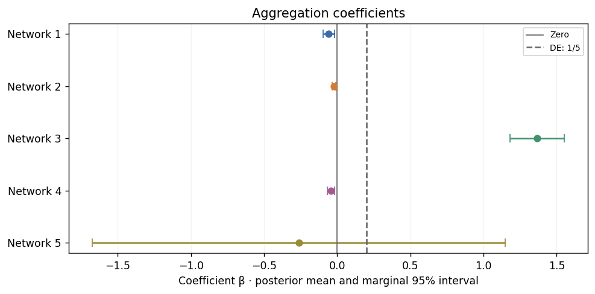
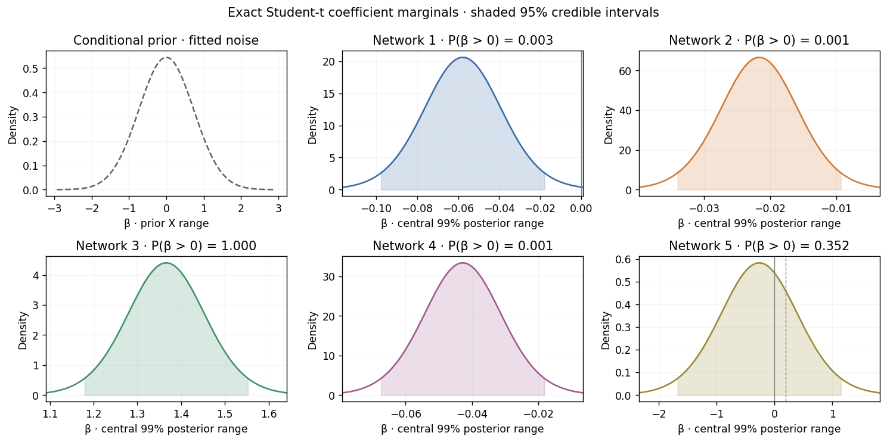
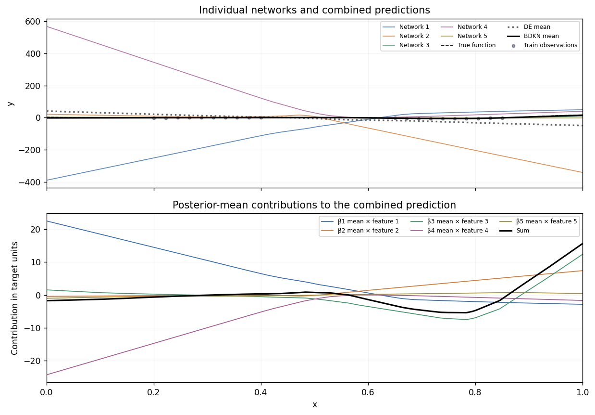
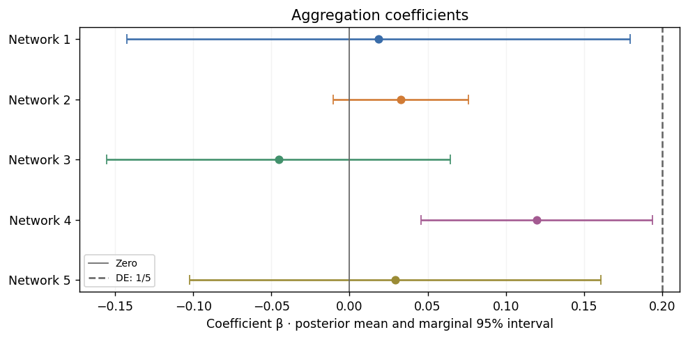
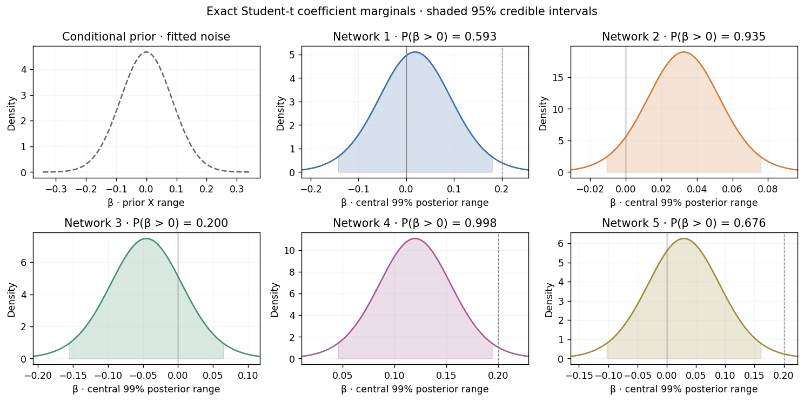
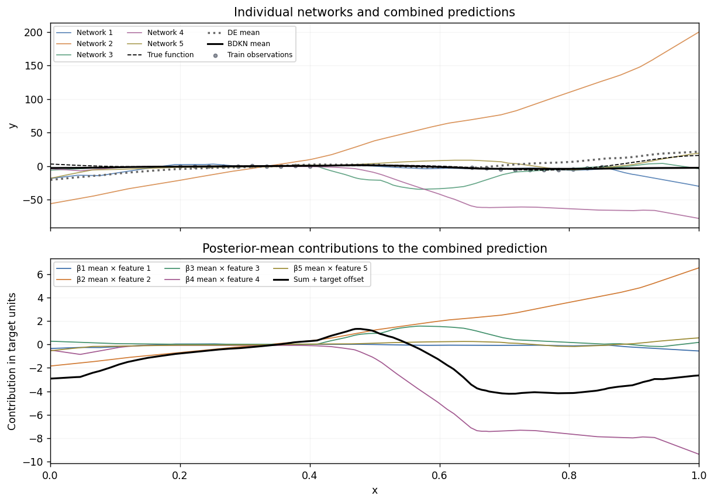
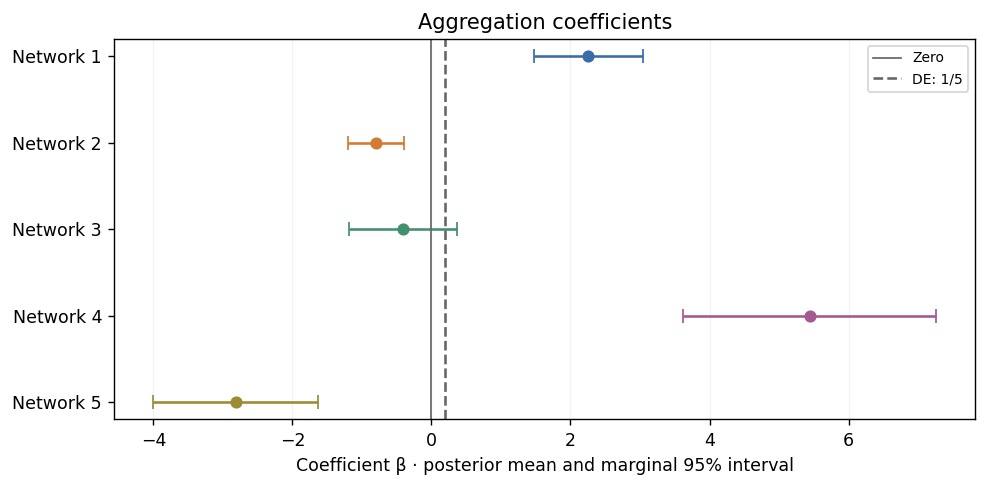
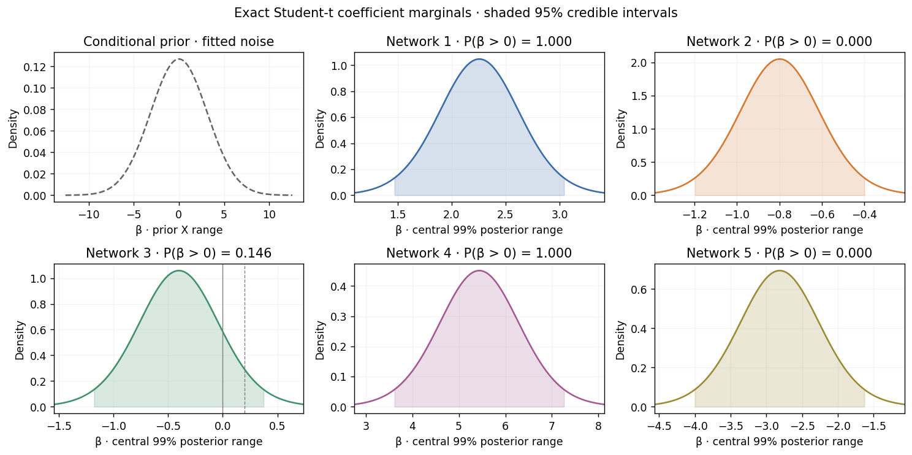
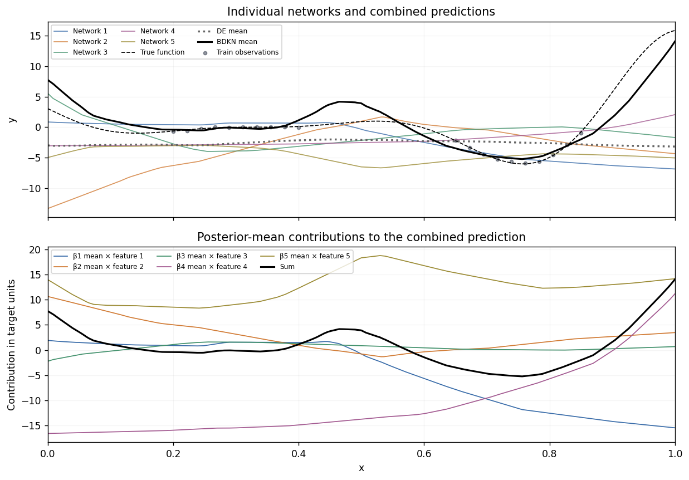

Regression comparison
Download resultsAggregation weights
Coefficients can be negative and need not sum to one. Intervals describe coefficient uncertainty; the dashed reference is DE’s fixed 1/H weight.
BDKN


Each density panel uses its own X range for readability; coefficient intervals above share a common axis. Prior reference conditions on fitted noise. Contribution shares use held-out inputs; test targets are used only for scoring.
| Network | β mean | 95% low | 95% high | P(β > 0) | Contribution share | Test RMSE | Test NLL |
|---|---|---|---|---|---|---|---|
| 1 | 1.98413 | -0.82135 | 4.78960 | 0.92214 | 0.09316 | 6.33172 | 2.61443 |
| 2 | -0.26203 | -0.97466 | 0.45060 | 0.22602 | 0.01751 | 6.96269 | 2.85838 |
| 3 | 1.88150 | -0.10312 | 3.86612 | 0.96904 | 0.12621 | 7.48989 | 9.28923 |
| 4 | -3.85127 | -5.63150 | -2.07105 | 0.00011 | 0.47302 | 10.59381 | 16.06180 |
| 5 | 6.14967 | 4.75819 | 7.54115 | 1.00000 | 0.29011 | 5.92139 | 22.68824 |
Functional repulsion · BDKN



Each density panel uses its own X range for readability; coefficient intervals above share a common axis. Prior reference conditions on fitted noise. Contribution shares use held-out inputs; test targets are used only for scoring.
| Network | β mean | 95% low | 95% high | P(β > 0) | Contribution share | Test RMSE | Test NLL |
|---|---|---|---|---|---|---|---|
| 1 | -0.05774 | -0.09757 | -0.01790 | 0.00336 | 0.37714 | 165.16152 | 11.00258 |
| 2 | -0.02164 | -0.03396 | -0.00931 | 0.00078 | 0.11082 | 144.78454 | 7.28447 |
| 3 | 1.36616 | 1.17951 | 1.55281 | 1.00000 | 0.15000 | 2.55282 | 2.38876 |
| 4 | -0.04276 | -0.06735 | -0.01816 | 0.00084 | 0.33805 | 226.38983 | 9.78198 |
| 5 | -0.26164 | -1.67302 | 1.14975 | 0.35154 | 0.02399 | 5.06018 | 2.84249 |
Weight repulsion · BDKN



Each density panel uses its own X range for readability; coefficient intervals above share a common axis. Prior reference conditions on fitted noise. Contribution shares use held-out inputs; test targets are used only for scoring.
| Network | β mean | 95% low | 95% high | P(β > 0) | Contribution share | Test RMSE | Test NLL |
|---|---|---|---|---|---|---|---|
| 1 | 0.01839 | -0.14253 | 0.17931 | 0.59301 | 0.01728 | 12.21634 | 3.68807 |
| 2 | 0.03269 | -0.01056 | 0.07595 | 0.93471 | 0.33119 | 81.67114 | 17.35278 |
| 3 | -0.04528 | -0.15519 | 0.06463 | 0.20017 | 0.05849 | 13.93570 | 3.79982 |
| 4 | 0.11979 | 0.04569 | 0.19390 | 0.99848 | 0.57098 | 43.55453 | 7.64626 |
| 5 | 0.02918 | -0.10244 | 0.16079 | 0.67561 | 0.02206 | 5.63714 | 3.36453 |
First-order repulsion · BDKN



Each density panel uses its own X range for readability; coefficient intervals above share a common axis. Prior reference conditions on fitted noise. Contribution shares use held-out inputs; test targets are used only for scoring.
| Network | β mean | 95% low | 95% high | P(β > 0) | Contribution share | Test RMSE | Test NLL |
|---|---|---|---|---|---|---|---|
| 1 | 2.25600 | 1.47173 | 3.04026 | 1.00000 | 0.17736 | 6.37256 | 2.44730 |
| 2 | -0.79861 | -1.19850 | -0.39873 | 0.00024 | 0.08496 | 7.20642 | 3.25437 |
| 3 | -0.40232 | -1.17857 | 0.37393 | 0.14625 | 0.02037 | 5.21156 | 3.34833 |
| 4 | 5.43883 | 3.61684 | 7.26082 | 1.00000 | 0.34243 | 4.54734 | 2.81155 |
| 5 | -2.81422 | -3.99873 | -1.62970 | 0.00004 | 0.37489 | 6.80265 | 4.35740 |